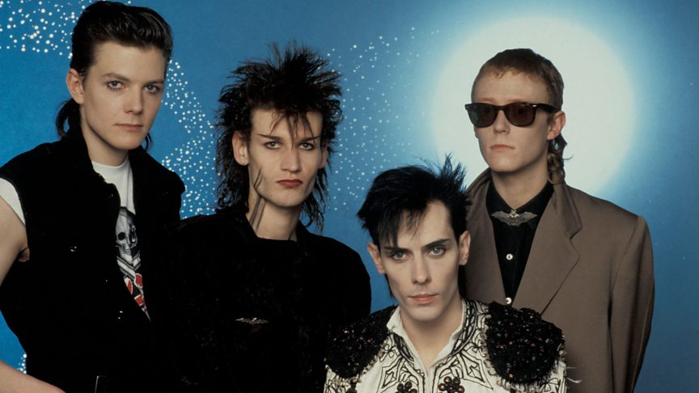

Vivemos na sociedade do consumo/descarte, crédito e da obsolescência programada, regulada pela velocidade das relações. Essa é a forma do capitalismo moderno, obsoletando o capitalismo antigo que se baseava em trabalho, produção e poupança. O anterior tinha uma ética monista, em oposição a ética hedonista do atual.
Obsolescência programada é o planejamento para que um produto dure pouco e estrague, ou que seja substituído por um modelo “mais atual” dentro de um prazo estipulado. São estratégias para aumentar o consumo. Mas para que o consumo e descarte fosse possível, foi necessária uma mudança ideológica e psicológica das populações (1). Por séculos no capitalismo a ética ensinava a “esperar e guardar” para “ter” exatamente “aquilo se quer”. Ou para satisfazer uma necessidade afetiva, baseada em sua identidade, com um forte vínculo emocional. A mudança era vista como algo ameaçador, ligado às revoluções. Porém, nas últimas décadas não consumimos mais os objetos nem satisfazemos uma necessidade: consumimos atualizações. Pela primeira vez na história o conceito de mudança se torna regra dominante e compulsório.
Consumismo: a base do consumo e descarte é o desapego afetivo, baseado em uma indefinição de identidade. Não havendo vínculo afetivo e de significado com os objetos, eles podem ser descartados na próxima estação por sua versão atualizada ou por uma nova tendência. Sejam modelos de carro ou computador, estilos de roupa ou musicais, atualizações de software ou apps (e até relacionamentos...), a ideologia que sustenta o sistema é a mesma.
Por isso muito da ideologia das últimas décadas defende o fim das identidades fixas em favor das “identidades fluidas” ou mutáveis. O tempo e velocidade de consumo e descarte é essencial no processo consumista. Assim, é preciso diferenciar consumo de consumismo. O consumo sempre existiu, de sociedades agrícolas pré-capitalistas até sociedades comunistas e o capitalismo do século XIX. O consumismo, por outro lado, é um projeto político-ideológico que foi colocado em prática especialmente na segunda metade do século XX. Consumismo, portanto, é diferente e consumo, acumulação e coleção, e de consumo subcultural, que comentaremos abaixo.
A acumulação pode ser patológica ou não, dependendo do grau. A diferença fundamental em relação ao consumismo é que há um vínculo afetivo em relação aos objetos, e a dificuldade ou incapacidade do descarte.O acumulador tem medo excessivo de ficar sem o objeto, acha que vai precisar dele no futuro, acumular vários do mesmo e pode até acumular lixo em casa. O acumulador tem dificuldade de organizar seus pertences.
Todos guardamos coisas que tem significado afetivo, e isso é normal e saudável em alguém com uma identidade historicamente construída. Porém o acumulador desenvolve uma incapacidade patológica de descarte, pois estabelece um vínculo exagerado com tudo. Acumuladores chegam a extremos de não terem mais lugar em sua casa par aguardar coisas, precisando de tratamento psicológico. Apesar de um colecionador acumular algumas coisas específicas, é fácil diferenciar um colecionador de um acumulador patológico: o colecionador é seletivo, organiza sua coleção e em geral tem orgulho dela, gosta de mostrá-la.
O acumulador, ao contrário, não é seletivo, não é capaz de organizar o que acumula e em geral tem vergonha do que acumula, como quem esconde um vício. Colecionar tem a ver com formação histórica de identidade: o colecionador tem um vínculo afetivo historicamente construído com o que coleciona.
As subculturas se constituem pelo processo reapropriação e ressignificação de itens da cultura geral. Assim, não são os itens isolados (música, cinema, moda, dança, maquiagem, literatura etc) que são subculturais em si, mas, isto sim, sua articulação em um novo discurso significativo: em uma visão de mundo
Subculturas se caracterizam por essa articulação viva de sentido entre as várias esferas de conhecimento e expressão humanas, produzindo uma nova visão de mundo pelo processo de ressignificação e homologia. Uma visão de mundo, é claro, é uma expressão política, não no limitado sentido do sistema partidário e de eleições, mas em um sentido mais profundo, prático e cotidiano. Pelo contrário, no mercado e cultura dominante os objetos são tomados como isolados, sem articulações de sentido, para que assim se constituam como produtos mais facilmente consumíveis (e descartáveis). Isso é diferente dos micro-mercados subculturais, que estão articulados e submetidos às suas respectivas subculturas e suas características fixas e ritmos.
Portanto não são os objetos em si, ou seus modos de reprodução, que são subculturais, mas, isto sim, é sua articulação em um novo sistema com uma visão de mundo alternativa que torna esses objetos “alternativos”. Dessa forma o mesmo CD, roupa, livro ou bota pode ser um produto no mercado para um consumidor aleatório sem nenhum vínculo articulado, e, ao mesmo tempo, ser algo com significado e político para o indivíduo que articula esse item em um discurso subcultural. Por isso o sistema de consumo subcultural se opõe ao sistema de consumo e descarte na sua lógica mais profunda, e não meramente pelo tipo ou características dos itens consumidos.
Logo o mesmo item/objeto cultural pode estar ao mesmo tempo no mercado e ressignificado de forma diferente nas subculturas X e Y, mas, como ensina a lógica, isso não faz nem com que aquele consumidor fragmentário seja alternativo/subcultural nem que as subculturas X e Y sejam necessariamente relacionadas. Para nós que vivemos submetidos a constante propaganda ideológica da sociedade de consumo/descarte pode parecer estranho dizer que nas subculturas a estética é política, mas vamos nos lembrar que o ramo da filosofia que estuda o significado das manifestações humanas e nas artes se chama exatamente... “estética”. Também nos estudos literários e semióticos – e outras ciências - o significado é inferido e estudado a partir da estética. Assim, da mesma forma que subculturas diferentes vão expressar visões de mundo e políticas diferentes ou conflitantes, é evidente que determinadas posições políticas são incoerentes com o discurso de algumas subculturas, ao passo que convergem com outras.
Portanto, nas subculturas, a estética é política (e cultura), reintegrando as esferas de conhecimento. Muitas pessoas são apenas consumidores de produtos – fragmentariamente - como de música ou de visuais que são associados a alguma subcultura: essas pessoas não têm intenção de participar nem tem vínculo com a visão de mundo particular de alguma subcultura: por exemplo, dos milhões de fãs de Siouxsie ou de usuários roupas pretas, apenas poucos são góticos, e poucos dos fãs de Ramones e Sex Pistols são punks, etc... Assim não há como confundir subculturas com tribos e fandons, sendo estes últimos dois conceitos mais fragmentários e menos perenes.
Ao mesmo tempo, indivíduos vinculados à visão de mundo da subcultura X consomem fragmentariamente itens de outras subculturas (e do mainstream também) sem necessariamente compartilhar suas visões de mundo. Por isso dizemos que somos seres “anfíbios culturais” (ver Happy House 1), pois vivemos em dois ambientes ao mesmo tempo: em uma subcultura integrada que é uma bolha de resistência dentro de uma cultura dominante fragmentada e que pressiona por fragmentação.